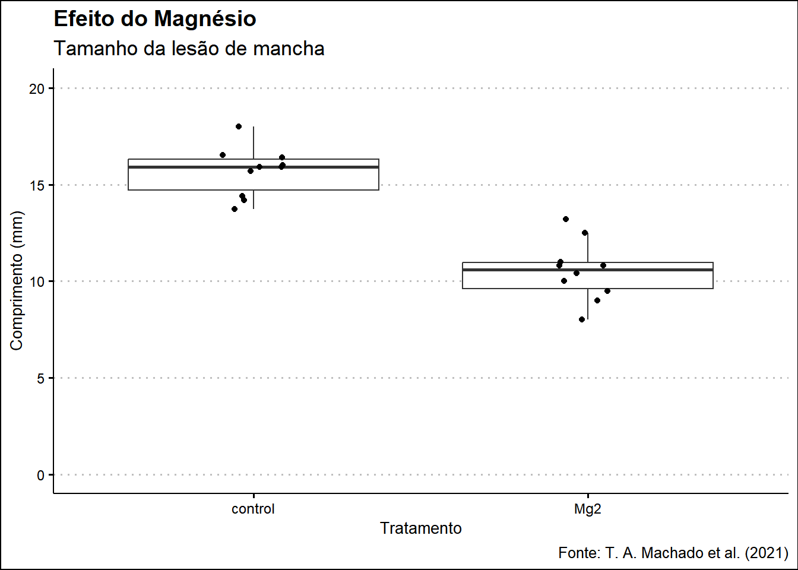

library(gsheet)
dados_nuvem <- gsheet2tbl("https://docs.google.com/spreadsheets/d/1bq2N19DcZdtax2fQW9OHSGMR0X2__Z9T/edit?gid=465348652#gid=465348652")
dados_mg <- gsheet2tbl("https://docs.google.com/spreadsheets/d/1bq2N19DcZdtax2fQW9OHSGMR0X2__Z9T/edit?gid=983033137#gid=983033137")
dados_survey <- gsheet2tbl("https://docs.google.com/spreadsheets/d/1bq2N19DcZdtax2fQW9OHSGMR0X2__Z9T/edit?gid=1118819738#gid=1118819738")Aula 2 - Leitura e Manipulação de Dados
O que aprendemos?
1. Leitura de Arquivos Excel
- Uso do
read_excel()do pacotereadxl - Leitura de planilhas específicas
- Funções de visualização como
head(),str(),glimpse()
2. Importação com Google Sheets
- Importar dados diretamente da nuvem com
gsheet
3. Manipulação de Dados
filter(),select(),group_by()ecount()- Combinar dados com
rbind()
4. Visualização com ggplot2
- Gráficos de colunas (
geom_col) - Boxplots (
geom_boxplot) - Combinação de gráficos com
patchwork
1. Leitura do Arquivo Excel
Google Sheets
2. Manipulação com dplyr
Abaixo estão alguns exemplos de como usar o pacote dplyr para explorar, filtrar e organizar os dados de uma pesquisa (dados_survey):
library(dplyr)
Anexando pacote: 'dplyr'Os seguintes objetos são mascarados por 'package:stats':
filter, lagOs seguintes objetos são mascarados por 'package:base':
intersect, setdiff, setequal, union# Agrupamentos
dados_survey |> group_by(species) |> count()# A tibble: 2 × 2
# Groups: species [2]
species n
<chr> <int>
1 Fgra 552
2 Fspp 114dados_survey |> group_by(residue) |> count()# A tibble: 3 × 2
# Groups: residue [3]
residue n
<chr> <int>
1 corn 169
2 soybean 281
3 <NA> 216dados_survey |> group_by(state, residue) |> count()# A tibble: 3 × 3
# Groups: state, residue [3]
state residue n
<chr> <chr> <int>
1 PR <NA> 216
2 RS corn 169
3 RS soybean 281# Filtros e combinação
RS <- dados_survey |> filter(state == "RS")
PR <- dados_survey |> filter(state == "PR")
combinado <- rbind(RS, PR)
# Seleção e filtros
survey_b <- dados_survey |> select(year, state, species)
survey_2009 <- survey_b |> filter(year == 2009)
survey_2010 <- survey_b |> filter(year == 2010)
survey_2011 <- survey_b |> filter(year == 2011)Com poucas linhas de código usando o dplyr, é possível:
- Agrupar e contar dados;
- Filtrar por estado ou ano;
- Selecionar variáveis relevantes;
- Combinar subconjuntos para comparar regiões.
Essas operações ajudam a limpar, organizar e entender melhor os dados antes de aplicar modelos ou criar visualizações. Uma análise bem feita começa com dados bem preparados e o dplyr facilita esse processo.
4. Visualização com ggplot2
library(ggplot2)
survey_b |> group_by(year, species) |> count() |>
ggplot(aes(year, n, fill = species)) +
geom_col() +
scale_fill_viridis_d() +
theme_classic()Visualizações com Estudos de Caso
Exemplo 1: Efeito do Magnésio
plot_magnesio <- dados_mg |>
ggplot(aes(trat, comp)) +
geom_boxplot(fill = "white", outlier.colour = NA) +
geom_jitter(width = 0.1) +
scale_y_continuous(limits = c(0, 20)) +
labs(
x = "Tratamento", y = "Comprimento (mm)",
title = "Efeito do Magnésio",
subtitle = "Tamanho da lesão de mancha",
caption = "Fonte: T. A. Machado et al. (2021)"
) +
ggthemes::theme_clean()
plot_magnesio
Exemplo 2: Crescimento Micelial
micelial <- gsheet2tbl("https://docs.google.com/spreadsheets/d/1bq2N19DcZdtax2fQW9OHSGMR0X2__Z9T/edit?gid=959387827#gid=959387827")
plot_micelial <- micelial |>
ggplot(aes(x = reorder(especie, tcm), y = tcm)) +
geom_boxplot(fill = "white", outlier.colour = NA) +
geom_jitter(width = 0.1) +
coord_flip() +
labs(
x = "Espécie", y = "TCM (mm)",
title = "Taxa de Crescimento Micelial",
caption = "Fonte: T. A. Machado et al. (2021)"
) +
ggthemes::theme_clean()
plot_micelialCombinação de Gráficos:
E por fim, vimos que dá pra exibir dois gráficos lado a lado diretamente no R sem depender de programas como PowerPoint ou ficar copiando imagem por imagem. Isso facilita a comparação entre visualizações e deixa o processo muito mais prático, tudo dentro do próprio ambiente de análise. Bem útil, né?
library(patchwork)
(plot_magnesio | plot_micelial) +
plot_annotation(tag_levels = "A")ggsave("Combo1.png", bg = "white", width = 8, height = 4)Dicas Finais:
- Confirme nomes de planilhas com
excel_sheets("arquivo.xlsx") - Prefira nomes simples e sem espaços para variáveis
glimpse()dá uma boa visão geral do dataset- Combine gráficos com
patchwork